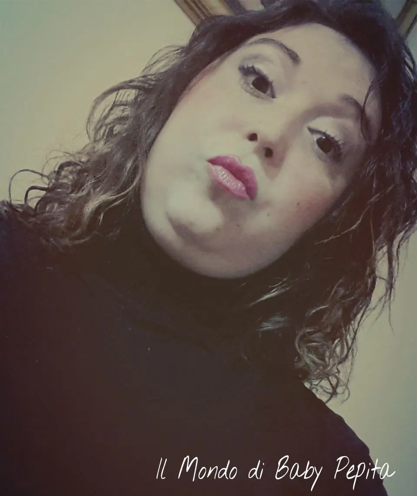
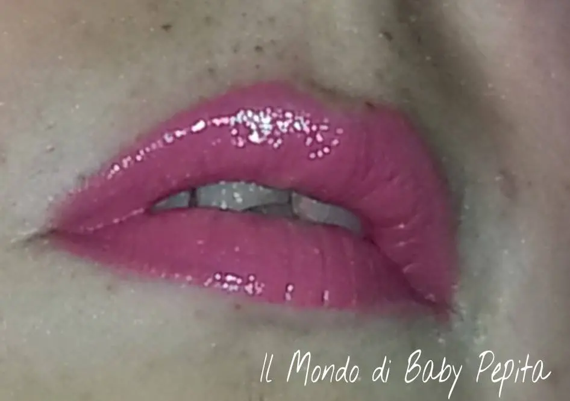
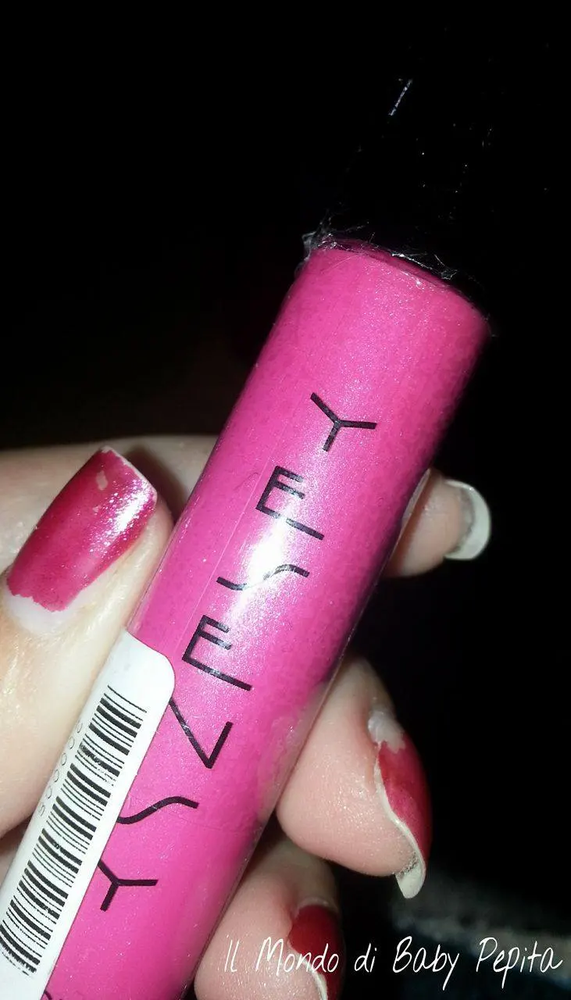
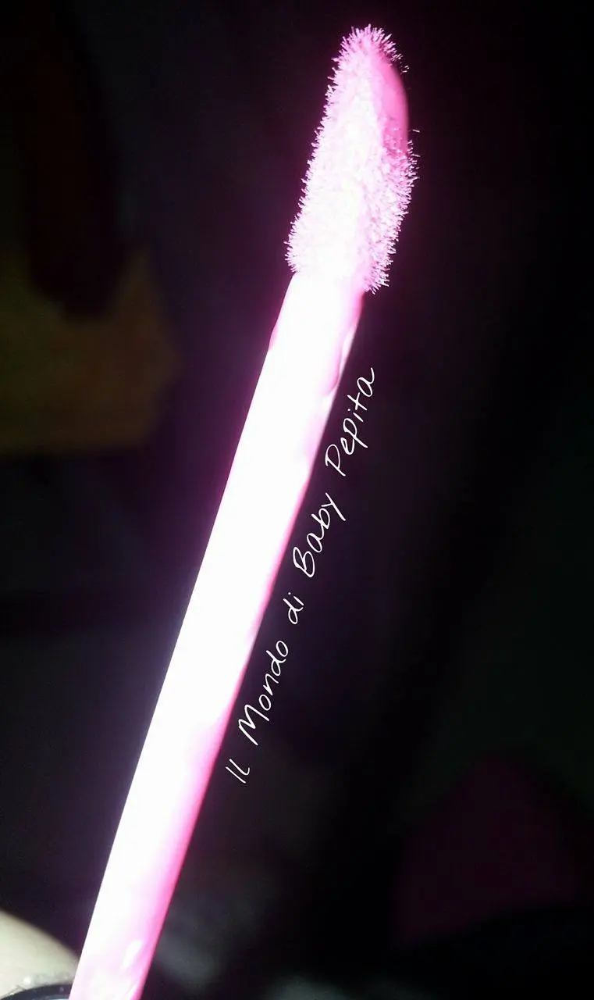
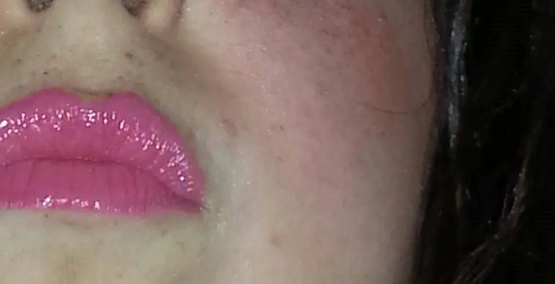

Yes Love - 2 in 1 - lipstick
Hola babyCome va ragazzuoli? ? ?

Amore per i rossetti, matitoni, lipgloss, lipstick e tutto ciò che concerne il makeup.Truccarmi solo gli occhi per esempio, senza usare anche un leggero lucidalabbra per me è come truccarmi a metà.Amo cambiare di colore, quindi non sono statica e devo essere sincera amo anche testare marche diverse anche quelle economiche.Ed è di una di quest'ultime che voglio parlarvi e mostrarvi.E' da molto che non mostro un nuovo rossetto ma oggi ho deciso che oltre alle recensioni e collaborazioni, volevo tornare a parlarvi di femminilità.Il colore in questione è fucsia, un bel fucsia acceso.In questo tempo così grigio e cupo vi chiederete cosa centra un colore così allegro, e invece c'entra tutto perchè è proprio in questi giorni che dobbiamo colorare la nostra vita.La marca è Yes LoveVi domanderete perché parlo di un prodotto per lo più cinese.. E' vero, non è uno di quei cosmetici che si possono consigliare per INCI, ma di tanto in tanto possiamo osare visto che non li ingeriamo.Il prezzo poi è bassissimo per lo più si aggirano su 1,00 € - 1,50 €Il lipgloss è molto cremoso e ha un buon profumo.Anche essendo un lucidalabbra colorato colora tutte le labbra in un bel colore vivo e non come a volte capita che sono quasi acqua.

Il packaging è molto semplice:Tappo nero in un tubetto trasparente dove possiamo vedere bene il colore (che rispecchia davvero il colore che poi andremo ad indossare).
Il pennellino è quello solito a spughetta come in tutti i lucidalabbra.
Ovviamente non possiamo aspettarci che siano di lunga durata ma sono abbastanza resistenti questi lipgloss.Cosa importante non sbavano. Con una leggera matita quasi dello stesso colore per il contorno labbra possiamo ottenere un buon risultato.A me è piaciuto molto e sinceramente tornerò ad indossarlo perché mi piace tanto la tonalità e la profumazione.
Con una leggera matita quasi dello stesso colore per il contorno labbra possiamo ottenere un buon risultato.A me è piaciuto molto e sinceramente tornerò ad indossarlo perché mi piace tanto la tonalità e la profumazione.